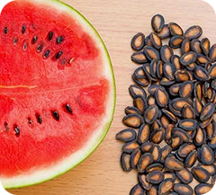

Semente de Melancia
A semente de melancia é responsável por dar origem a uma das frutas mais refrescantes e consumidas no verão. Seu cultivo é adaptável a diferentes tipos de solo, desde que bem drenado e com boa exposição solar. Além de ser essencial para a produção da fruta, as sementes também podem ser aproveitadas na alimentação por serem ricas em nutrientes.
As plantações de melancia requerem atenção à irrigação, pois o excesso de água pode prejudicar o crescimento. O manejo adequado e o uso de sementes selecionadas garantem frutos maiores, mais doces e com casca firme, ideais para o consumo e comercialização.
← Voltar para HubsBenefícios e Malefícios
Benefícios
- Fonte natural de proteínas, ferro e magnésio.
- Excelente para produção comercial em climas tropicais.
- Ajuda na hidratação do corpo devido ao alto teor de água da fruta.
- As sementes torradas fortalecem o sistema imunológico.
Malefícios
- Consumo excessivo de sementes cruas pode causar leve desconforto digestivo.
- Excesso de umidade no solo pode apodrecer as raízes.
- Algumas variedades híbridas não produzem sementes férteis para replantio.